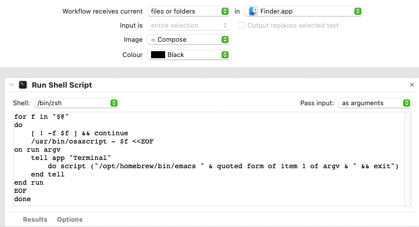

Modifier keys
Here is how I like to set up my modifier keys on MacOS (System settings > Keyboard > Keyboard Shortcuts > Modifier Keys):
Automator Quick Actions
To create custom actions in MacOS, open Automator and create a Quick Action (see examples below). Once your Quick Action is created, you can associate it with a keyboard shortcut in System settings > Keyboard > Keyboard Shortcuts > Services > General.
Quick actions are saved in ~/Library/Services. To go to ~/Library in Finder, hold
down the Option key while clicking on the "Go" item in the menu bar at the top of the screen.
Copy text to clip board
I use this type of Quick Action with my email addresses so that I never mistype them:
Edit file in terminal-based text editor
This Quick Action allows me to easily edit a text file from Finder (this example uses Emacs):
You can find it in Finder's Quick Actions:
- By right-clicking on one or more files
- In the bottom right part of the Finder window when using the "columns" view